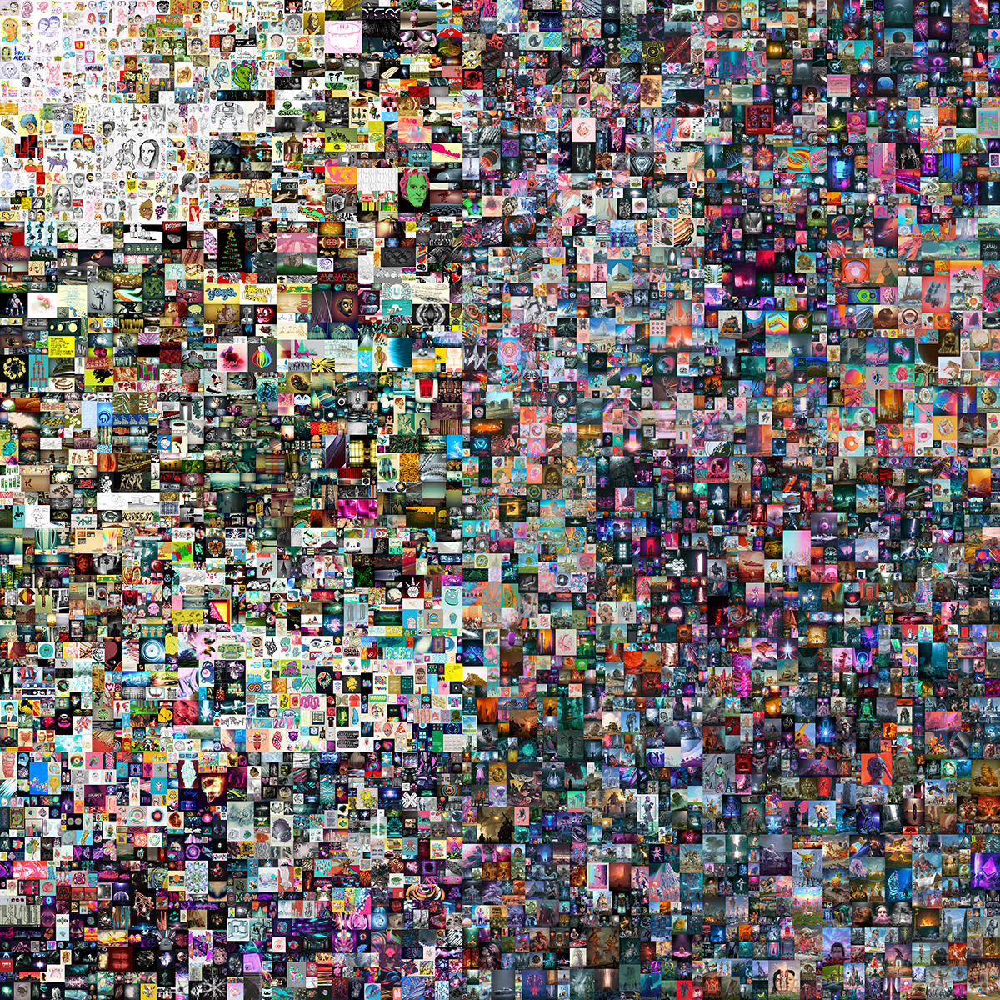
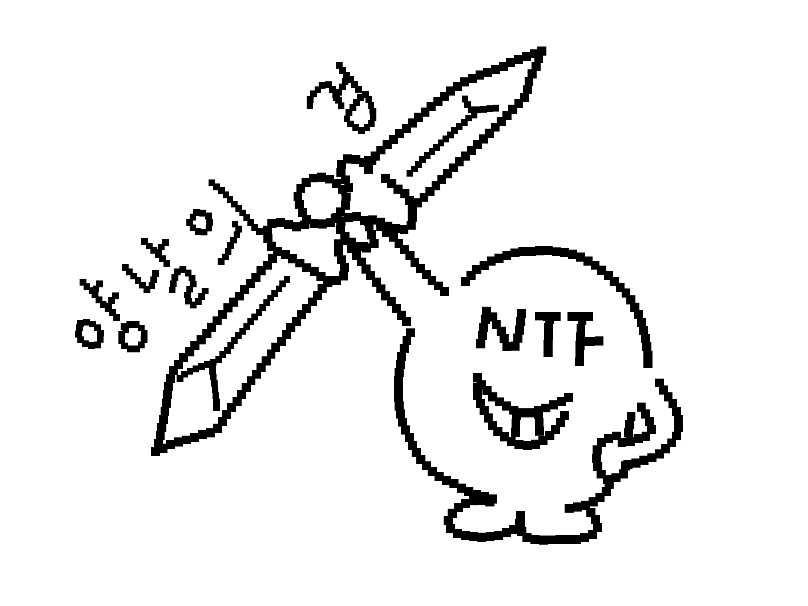
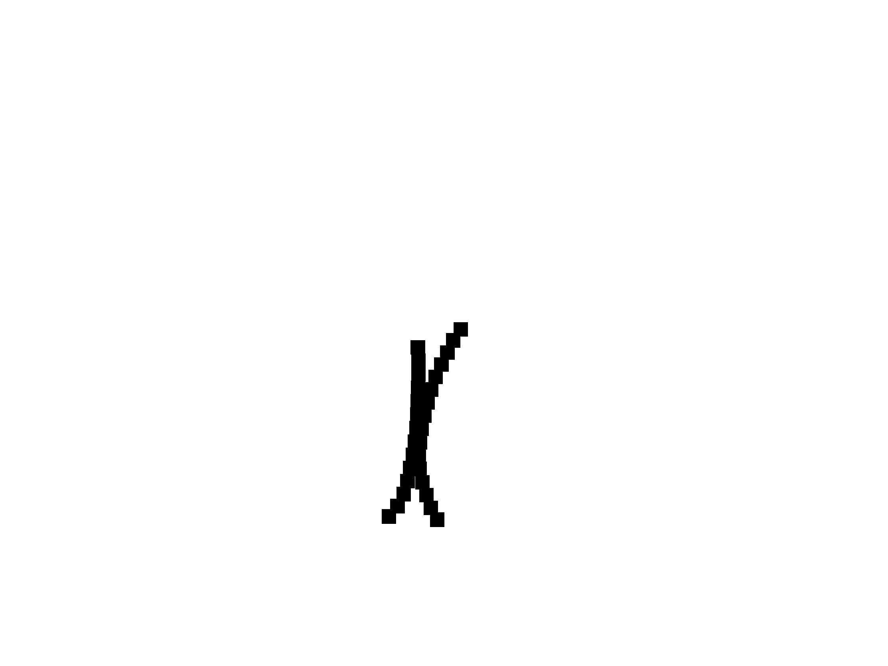

문화예술시장의 변화
몇가지 용어들을 간단히 알고 가요!
IT 기술의 발전과 함께 디지털 콘텐츠의 생산과 소비 또한 증가하였는데요. 현재 코로나19로 인한 온택트 시대에는 온라인 디지털 콘텐츠의 황금기라고 할 수 있죠. 집에서 수업을 듣고 콘서트를 즐기는 시대가 온 것이죠. 그렇다면 문화예술시장은 어떻게 변화하였을까요

위 작품은 디지털 화가 비플이 2007년부터 연재한 디지털 작품을 모아놓은 비플의 첫 순수 NTF 예술품이에요. 이 3000MB 용량의 JPG 파일이 경매로 약 785억 원에 낙찰되어 논란이 되었어요. 디지털 파일이 빈센트 반고흐의 유화 <턱수염이 없는 자화상>보다 더 비싼 값에 팔린 것이죠. 논란이 될만하죠?
NTF가 뭔데?
NTF는 Non fungible Tokend의 약자로 ‘대체 불가능 토큰’을 의미하는 디지털 자산으로 가상화폐가 사용하는 블록체인 기술을 이용해요. 특이한 점은 이름처럼 대체가 불가능한 유일한 디지털 토큰이라 세상에서 단 하나뿐인 자산이라는 점이죠.
NTF가 문화예술이랑 무슨 상관이지..
NTF가 작품에 적용되면 NTF에는 거래 이력과 작품의 소유권이 명시돼요. 이것을 일종의 디지털 정품+소유 인증서라고 할 수 있죠. 예술계에서 중요한 원본 증명서 역할을 NTF가 해주는 것이에요.
앞에서 언급했던 IT 기술의 발전에 따라 디지털 콘텐츠가 증가와 코로나19로 인한 온택트 시대.. 디지털 예술 작품 또한 증가하였고 그에 따라 시장의 형태 또한 변화한 것이죠. 자유로운 디지털 시장, 문화예술 시장이 형성된 것!
물론 좋은 점만 있지는 않겠죠?

장점
생산의 자유로움. 기존의 예술작품이 진품으로 인정받는 과정은 상당히 어려웠지만 NTF로 인해 매우 간단한 컴퓨터 작업만으로도 진품을 증명할 수 있어요.
거래의 자유로움. 진품 구분이 명확해 식별이 쉽고 인터넷 전송을 통해 거래하기 때문에 거리와 시간의 제약을 받지 않아요.
용이한 보관. 실존 예술 작품과 달리 디지털 파일이기 때문에 usb에도 보관이 가능해요. 게다가 NTF는 블록체인 기술을 이용해 해킹과 같은 외부 공격에도 강하죠.
희소성. 디지털 파일임에도 희소성을 입증하는 데이터가 내장되어 있어요.
단점
애매한 소유의 개념. NTF가 원본 증명서의 역할은 하나 아직 법적인 의미에서의 소유 증명은 하지 못해요. 작품을 구매해도 콘텐츠에 대한 독점적 사용이 불가능하다는 말이죠..
NTF의 난립. 누구나 NTF를 만들 수 있기에 예술적 가치가 적은 작품 또한 대량 생성될 것으로 추측돼요. 현재 가상화폐 시장에 버블효과가 일어나 불안정하듯 NTF 또한 그럴 가능성이 있고요. 결국 최종적으로는 유명한 사람들의 작품만 팔려 부익부의 수단만 된다는 우려의 목소리도 나오고 있어요.
모든 가상화폐가 그러하듯, NTF가 건강한 디지털 예술 시장으로 자리잡기 위해서는 장기적으로 보는 관련 법안이 필요해요!
첫 번째 박에서는 IT기술 발전에 따른 새로운 예술 분야 ‘인터랙티브 아트’에 대한 이야기가 담겨 있었고, 두 번째 박에서는 IT 기술 발전에 따른 새로운 문화예술 시장 ‘NTF’에 대한 이야기가 담겨 있었어요.
유익했기를 바라며 박씨는 새로운 열매를 열기 위해 떠납니다.. 모두 건강하세요!

자료의 출처 등 더 궁금하다면..